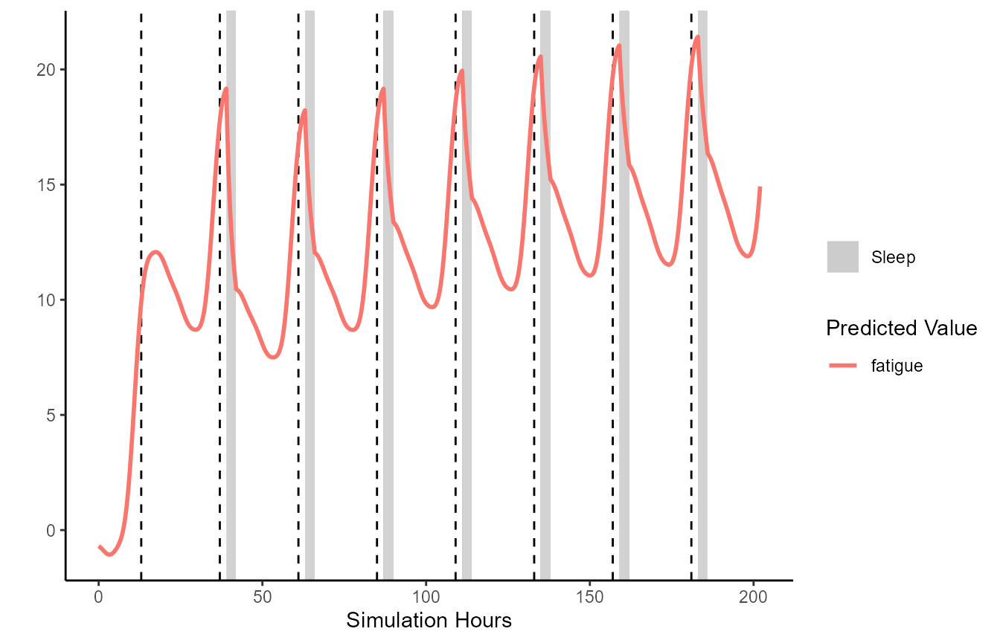
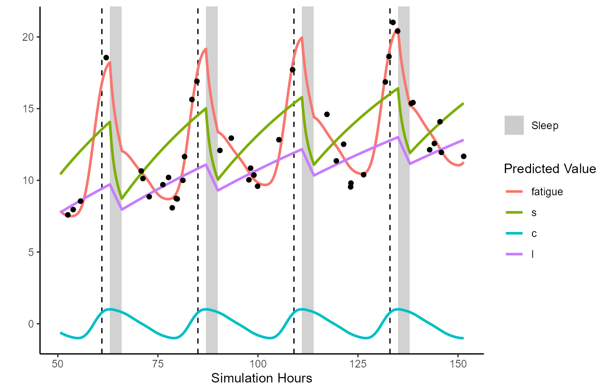
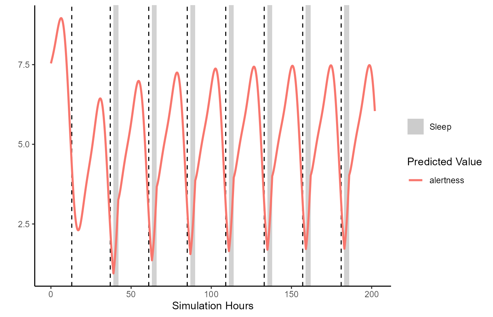
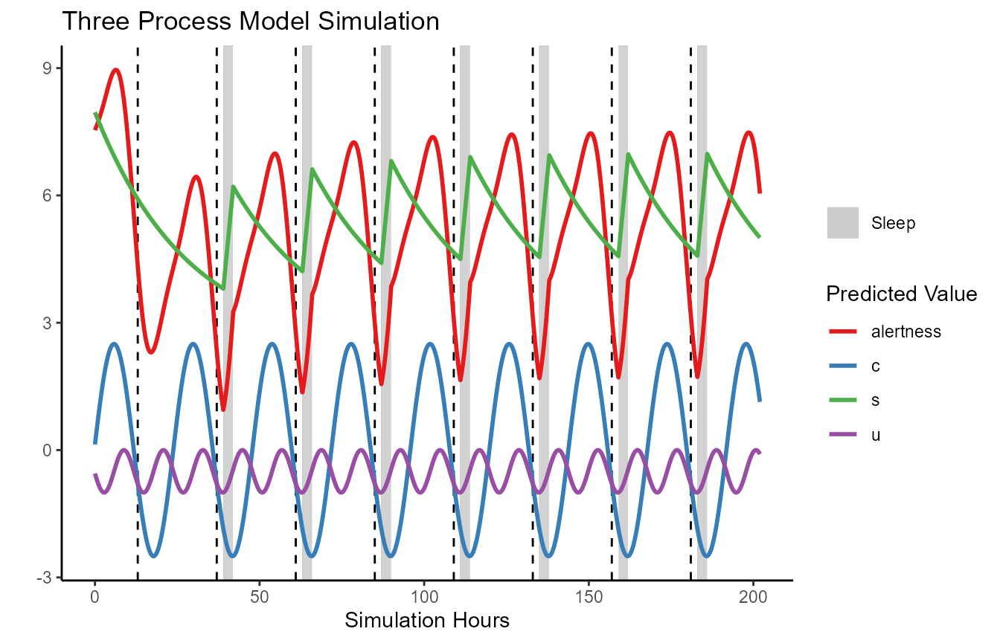

Plotting
plotting.RmdIntroduction
In this vignette we briefly demonstrate how to use the FIPS plotting function. Below we create sleeptimes and simulate an example sleep scenario to plot. This example includes initial sleep deprivation.
(Note: you should read vignette("FIPS-simulation-walkthrough","FIPS") first).
# Simulation start date time (i.e., when you want first predictions to begin)
simulation.start = lubridate::ymd_hms('2018-05-01 11:00:00', tz = "Australia/Perth")
# Simulation end date time (i.e., when you want predictions to end)
simulation.end = lubridate::ymd_hms('2018-05-09 21:00:00', tz = "Australia/Perth")
# Sleep times, 5 hours per night, starting 23:00
example.sleeptimes <- tibble::tibble(
sleep.start = seq(
from = lubridate::ymd_hms('2018-05-03 02:00:00', tz = "Australia/Perth"),
to = lubridate::ymd_hms('2018-05-09 16:00:00', tz = "Australia/Perth"),
by = '24 hours'),
sleep.end = sleep.start + lubridate::dhours(3),
sleep.id = rank(sleep.start))
simulated.dataframe = parse_sleeptimes(
sleeptimes = example.sleeptimes,
series.start = simulation.start,
series.end = simulation.end,
sleep.start.col = "sleep.start",
sleep.end.col = "sleep.end",
sleep.id.col = "sleep.id",
roundvalue = 5)
unified.simulation.results = FIPS_simulate(
FIPS_df = simulated.dataframe, # The FIPS_df
modeltype = "unified", # three process model
pvec = unified_make_pvec() # paramater vector
)FIPS contains a generic plot method for simulation results. By default this will plot fatigue over time. Sleep is indicated by the grey rectangles, and the start of each new day is indicated by the dashed lines.
plot(unified.simulation.results)
Often it will be helpful to restrict the plotting between certain datetimes, and plot additional data such as the model’s time-varying process estimates (e.g., c, s):
plot(unified.simulation.results, from='2018-05-03 13:30:00',
to = "2018-05-07 18:30:00", plot_stat=c("fatigue", "s", "c", "l"))
Observed data can be plotted against the sleep predictions. Below demonstrates by sampling some data points from the previously generated data frame, then adding some random noise to make some ‘pretend’ observed data.
pretend_ratings <- unified.simulation.results %>% dplyr::filter(wake_status)
pretend_ratings <- pretend_ratings[sample(1:length(pretend_ratings$datetime), 100),
c("datetime", "sim_hours", "fatigue")]
pretend_ratings$fatigue <- pretend_ratings$fatigue + rnorm(length(pretend_ratings$fatigue),0,0.7)
plot(unified.simulation.results, from='2018-05-03 13:30:00',
to = "2018-05-07 18:30:00", plot_stat=c("fatigue", "s", "c", "l"),
fatigue_CIs = FALSE, observed=pretend_ratings, observed_y="fatigue")
Below demonstrates an example plotting the three process model. Results are similar except the output is alertness, rather than fatigue. This is automatically handled for you if you are using the generic plot function.
TPM.simulation.results = FIPS_simulate(
FIPS_df = simulated.dataframe, # The FIPS_df
modeltype = "TPM", # three process model
pvec = TPM_make_pvec() # paramater vector
)
plot(TPM.simulation.results)
It is important to note that the generic plot() function is simply calling FIPS_plot under the hood. Users wishing full control may find the FIPS_plot function more intuitive to work with.
FIPS_plot(TPM.simulation.results,
plot_stat = c("alertness", "c", "u", "s")) +
ggplot2::ggtitle("Three Process Model Simulation") +
ggplot2::scale_color_brewer(palette="Set1")